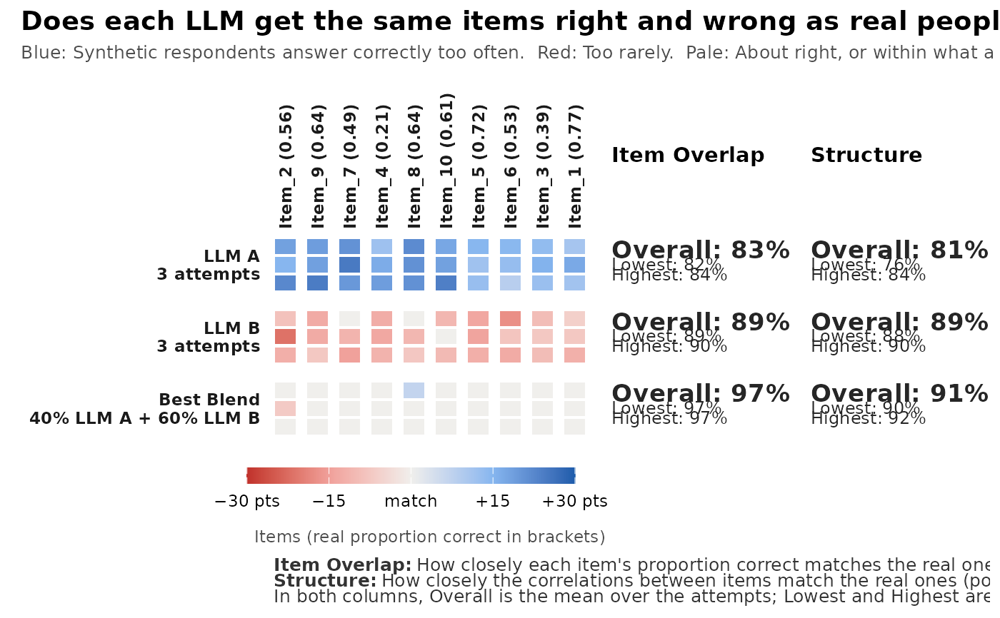

Draws an synthetic_coverage() result: One row per model and attempt
(and the Best Blend), one column per slice of the real population or,
in item mode, per item (or per answer category of polytomous items).
Blue cells hold too many synthetic respondents or answers, red cells too
few, and pale cells are a match or within what a real sample of the same
size would show by chance. On the right, Overlap (Item Overlap in item
mode) and Structure give the mean (Overall), the worst (Lowest) and the
best (Highest) attempt.
Usage
gg_coverage(
x,
page = 1,
order = c("worst", "difficulty", "original"),
items_per_plot = NULL,
max_columns = 40,
title = NULL,
subtitle = NULL
)Arguments
- x
an
sc_coverageobject fromsynthetic_coverage().- page
with more items than fit on one plot, the page to draw, or
"all"for a list of all pages.- order
item order in item mode:
"worst"(lowest Item Overlap first),"difficulty"(real proportion correct or mean, high to low) or"original".- items_per_plot
number of items on one page; by default as many as fit in
max_columns.- max_columns
the most columns on one page.
- title, subtitle
optional title and subtitle; by default a question that fits the view.
Details
In item mode one plot shows at most max_columns columns, so the cells
stay readable: 20 right/wrong items, 8 five-point Likert items, 5
seven-point items, and so on. Larger tests are split into pages; by
default the worst-matching items come first. The numbers on the right
always use all items.
Examples
set.seed(1)
a <- matrix(rlnorm(10, 0.2, 0.3)); d <- matrix(rnorm(10))
real <- as.data.frame(mirt::simdata(a, d, 800, itemtype = "dich"))
llm <- function(mu, s) lapply(1:3, function(i) as.data.frame(
mirt::simdata(a, d, 200, itemtype = "dich", Theta = matrix(rnorm(200, mu, s)))))
cov <- synthetic_coverage(list("LLM A" = llm(0.8, 0.7), "LLM B" = llm(-0.5, 0.9)),
real, slices = "item")
gg_coverage(cov)
